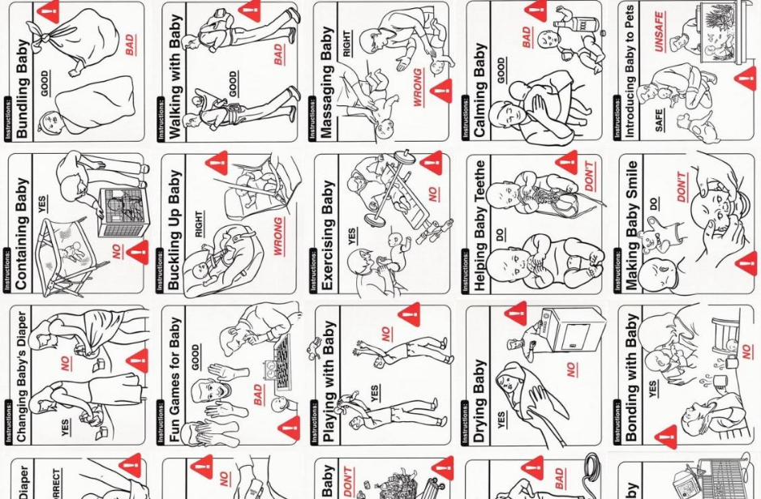
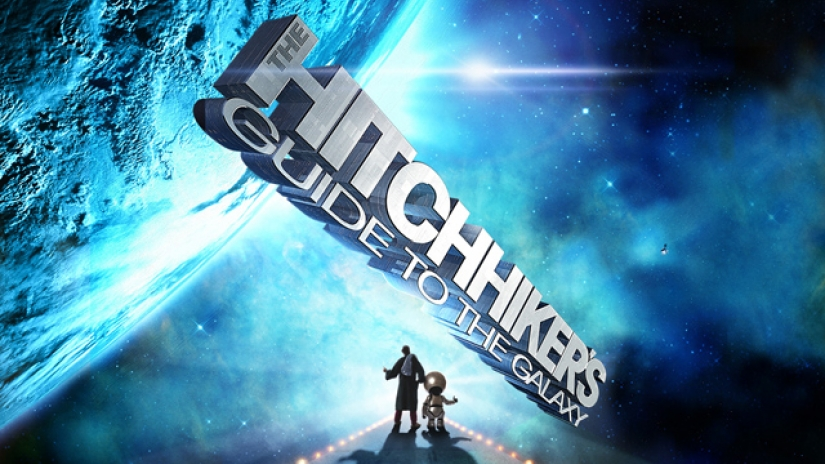

me.life() 家里的夜景 人其实很容易发现自己和世界不兼容：当白领们辛苦工作只想在周末过和你躺着一样的生活、综艺频道是收视率最高的但你却一集都没看过——大众的平均值是一种很微妙的东西，确实有很多人方方面面都被平均值代表，但不少人又发现自己在边边角角上总有异类之处。
 me.life() Product Manual | Cognitive Decline 说明书之所以会让人觉得废话多，多半是我们已经在它试图说明的领域里积累了生活经验。但时不时，特别是我们接触到新的东西的时候，我们甚至会想要一本废话连篇的说明书，以免我们甚至看不懂其中最基本的操作 - 我在看编程方面的手册的时候经常有这种想法，希望作者多写点废话告诉我他每一步在做什么。
me.life() 大众教育(n.)和教育大众(v.) Trump就职之后半年过去了，推进很多政策困难重重，最近总算在DACA/DAPA事情上有了些进展，墨西哥边境造墙的工程也进入了早期的小型模拟建设来验证招标的阶段；不过唐总一百多天里光高尔夫就打了40多天难免被媒体批判一通。
me.life() 自卑与自负 正常的时候写不出好文章。 自卑和自负的时候常常出产大量文采略高于正常时刻的文章。 自我怀疑的时候像个智障。 担心这，担心那，担心自己考试考到不该考的分数，担心自己的未来... 还写不出好文章（摊手）
 me.life() 银河系漫游指南 你们无疑已经知道，开发银河系偏远地区的计划需要修建一条超空间快速通道穿越你们这个星系。令人遗憾的是，你们居住的这颗行星属于被清除的范围。清除行动将在你们地球时间两分钟之内展开。谢谢